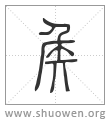
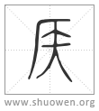

加入收藏

𥎦
古文矦。
清代 段玉裁《說文解字注》
- 春饗所射矦也。
饗者、鄉人㱃酒也。春饗所射矦、謂天子諸矦養老先行大射禮之矦也。天子諸矦養老皆如鄉飮酒之禮。故亦謂之饗。文王世子曰。設三老五更群老之席位。注云。三老如鄉飮酒禮之賔。五更如介。群老如衆賔。魯頌曰。魯矦戾止。在泮飮酒。箋云。徵先生君子與之行飮酒之禮。而因以謀事也。此天子諸矦養老卽鄉飮酒之證也。廱下曰。天子饗㱃辟廱也。泮下曰。諸矦饗射泮宮也。饗皆謂養老也。古者鄉飮鄉射必聨類而行。卿大夫士之射必先行鄉飮酒之禮。天子諸侯則先大射、後養老。天子諸矦賔射於朝。燕射於寢。大射於澤、於射宮。射宮者、大學也。行葦爲養老之詩。箋云。先王將養老、先與群臣行射禮。擇其可與者以爲賔。今我成王承先王之法度。亦旣序賔矣。有醇厚之酒醴以吿黃耇之人。徵而養之。王制曰。王親視學。注云。謂習射、習鄉以化之。習射卽大射。習鄉卽養老。此天子大射而養老之證也。七月、行葦皆詠公劉之詩。七月言朋酒斯饗。行葦箋言先王將養老、先與群臣行射禮。先王卽謂公劉。此諸矦大射而養老之證也。大射張皮矦而棲鵠。其禮大故得專矦名。郊廟祭祀必先大射。不言祭但言饗。舉饗以賅祭也。不言秋但言春何也。舉春以賅秋也。廱下但言饗不言射。舉饗以賅射也。
- 从人。
爲人父子君臣者、各以爲父子君臣之鵠。故其字从人。鄭云。矦制上廣下狹。葢取象於人。張臂八尺。張足六尺。是取象率焉。
- 从厂。象張布。
梓人爲矦。上㒳个與其身三。下㒳个半之。注云。个者、鄉射禮記所謂舌也。矦凡用布三十六丈。矦之張布如厓巖之狀。故从厂。
- 矢在其下。
象矢集之也。乎溝切。四部。
- 天子射熊虎豹。服猛也。諸矦射熊虎。大夫射麋。麋、惑也。
熊虎豹、當依周禮作虎熊豹。轉寫誤倒也。諸侯射熊虎、各本作射熊豕虎。賸豕字。今正。此本周禮言春亯所射也。司？曰。王大射則共虎矦熊侯豹矦。設其鵠。諸矦則共熊矦豹矦。卿大夫則共麋矦。皆設其鵠。鄭曰。以虎熊豹麋之皮飾其側。又方制之以爲？、謂之鵠。箸於侯中。所謂皮侯。王之大射。虎矦、王所自射也。熊侯、諸矦所射。豹矦、卿大夫以下所射。諸矦之大射。熊矦、諸侯所自射。豹侯羣臣所射。卿大夫之大射。麋侯、君臣共射焉。按梓人云張皮侯而棲鵠者、謂此也。諸侯射熊虎、與今本不同者。鄭曰。故書則共熊矦虎矦。杜子春云。虎當爲豹。是則鄭從杜改。許從故書也。天子諸侯服猛。大夫去惑。說其義也。郊特牲曰。虎豹之皮、示服猛也。漢五行志曰。麋之爲言迷也。
- 士射鹿豕。爲田除害也。
鄕射禮記曰。凡侯、天子熊侯、曰質。諸侯麋矦、赤質。大夫布矦、畫以虎豹。士布矦、畫以鹿豕。鄭云。此所謂獸矦也。梓人張獸矦則王以息燕是也。息者、休農息老物也。燕謂勞使臣、若與羣臣飮酒而射。是則上射鹿豕在王息燕時。不在大射。而許牽合言之。容鄭以前說禮不同也。鄭云。士不大射。士無臣。祭無所擇。故司裘於大射不言士。鹿豕爲田害。故大蜡迎虎。
- 其祝曰。母若不寧侯。不朝于王所。故伉而射汝也。
十九字、韵會用考工記作四十二字。非也。梓人曰。祭侯之禮以酒脯醢。其辭曰。惟若寧矦。母或若女不寧侯。不屬于王所。故抗而射汝。強飮強食。貽曾孫諸侯百福。大戴禮略同。抗、舉也。許作伉。大戴作亢。